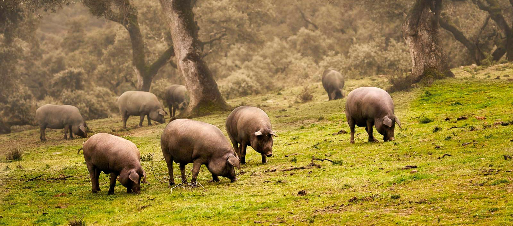
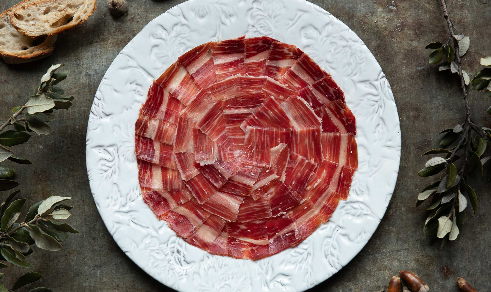

EL REY DE LAS DEHESAS IBÉRICAS
Date el placer con uno de los mejores jamones del mundo y con nuestros excelentes productos de bellota
Aclamado por los mejores chefs y críticos gastronómicos del mundo, ha aparecido en las mejores boutiques y restaurantes del mundo